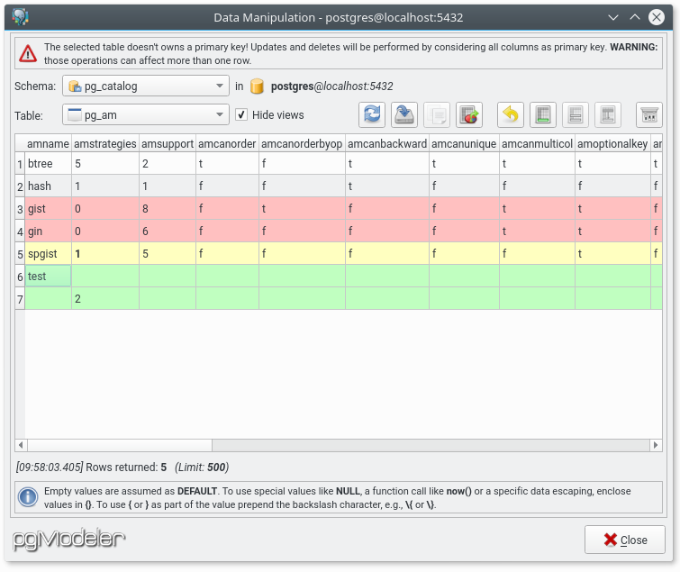
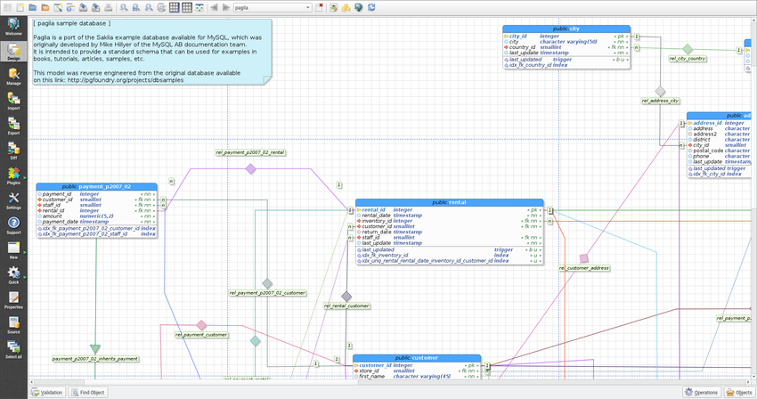
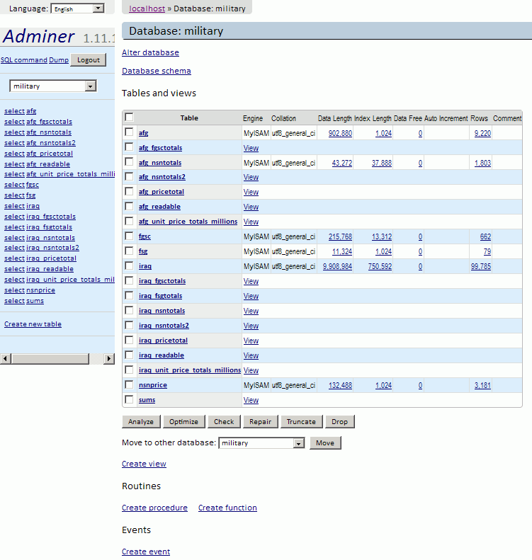
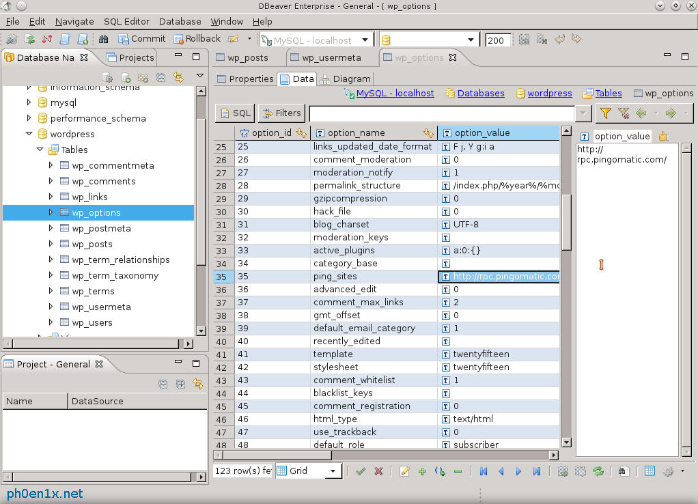
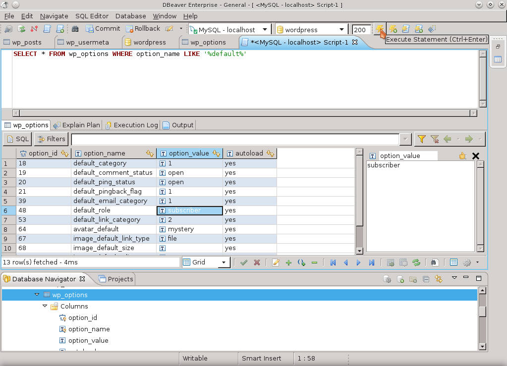
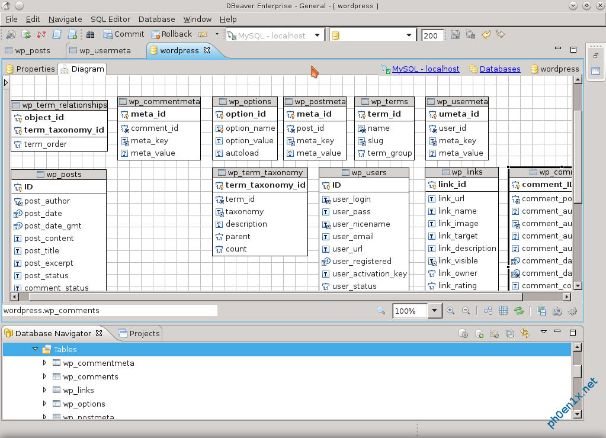
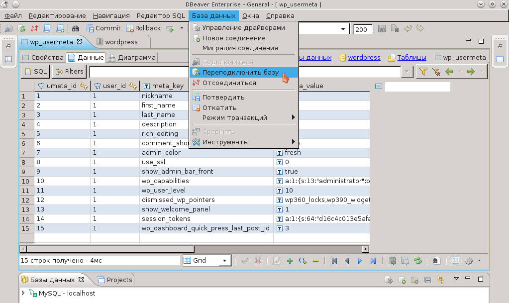

Графический PostgreSQL-клиент pgModeler
Самый навороченый менеджер, написанный на Qt, на 2017 год - это pgModeler. Кроссплатформенный, OpenSource, поддерживает различные версии PostgreSQL.
Сайт: https://www.pgmodeler.com.br/
Скриншот окна Manage:
Редактор данных:

Окно визуального конструктора таблиц и редактора межтабличных связей:

Adminer - web-интерфейс для PostgreSQL
Adminer (бывший phpMinAdmin) — это легковесный инструмент администрирования MySQL, PostgreSQL, SQLite, MS SQL и Oracle. Проект родился как «облегчённый» вариант phpMyAdmin. Распространяется на условиях Apache license в форме одиночного PHP-файла размером около 380 KB, который является результатом компиляции исходных .php и .js файлов с помощью специального PHP-скрипта. Первая версия Adminer'а была выпущена 25 июля 2007 года. Несмотря на свою легковесность этот скрипт поддерживает практически все возможности phpMyAdmin/phpPgAdmin и других аналогичных инструментов.

Отзывы о Adminer:
Админер клёвый. Залил его за полсекунды на хост, подправил что надо и снес. Никаких настроек, сложностей и зависимостей. Один фаил (css я обычно не заливаю даже, и так нормальный минималистический интерфейс в стиле web 1.0). Обожаю его. Как начал пользоваться — уже phpmyadmin никуда не заливал — избыточная трата времени. PMA тоже классный конечно, но в 99% случаев он не нужен.
На мой взгляд PMA менее юзерфрендли да и функционалом местами уступает Админеру
Любопытная штука, действительно покрывает почти все задачи.
Уже много лет неустанно призываю людей попробовать Adminer. Не хотят, сопротивляются, говорят привыкли к PMA и их все устраивает. Но если чуть ли не силой заставить их немного попользоваться, обратно на PMA никто не возвращается )
Отличная вещь, пользуюсь несколько лет. Лаконичность подкупает, а PMA кажется неповоротливым монстром.
ответить
Да, прекрасный инструмент, неоднократно помогал и помогает быстро и просто работать с разнообразными данными в различных БД.
Весьма годный инструмент. Кстати, если нет полноценного веб-сервера, можно запускать через встроенный в php сервер:
php -S 127.0.0.1:8080 -t /path/to/adminerDir/
Графический PostgreSQL-клиент DBeaver
Сайт: http://dbeaver.jkiss.org/
DBeaver - это свободный кроссплатформенный менеджер баз данных для Linux, Windows и MacOS. О DBeaver кратко: много возможностей, небольшой вес, портабельность, свободное ПО. Разрабатывается в России. Написан на Java, требует JRE 1.8+. Коннект к базам данных происходит с помощью JDBC.
Навигация по таблицам и базам данных:

Редатор SQL запросов:

Генератор диаграммы БД:

Программа автоматически включает для интерфейса тот язык что установлен у вас по умолчанию в системе. К примеру если у вас стоит GNU Debian Linux на английском то запустив DBeaver интерфейс программы будет тоже на английском. Как вручную сменить язык интерфейса в DBeaver на русский или другой язык? Язык нужно передать как параметр при запуске бинарного файла dbeaver:
dbeaver -nl ru_RU
Здесь предполагается что команда выполняется в каталоге где распакован DBeaver. В результате будет включен русский язык:
